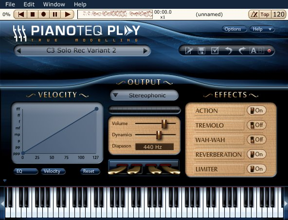

Over ten years ago the Internet was more of a playground for me than anything else. I would spend time downloading small games (often less than a megabyte), cool pictures, and, of course, music. Since audio compression technology had quite a way to come before we could fool users into thinking that a 3MB audio file was just as acceptable as a lossless waveform and the majority of users were entering the information superhighway using a dial up connection, MIDI files were prolific. I collected them, often searching for one where someone had merged just the right kinds of fake instrument sounds to give it somewhat of a semblance to the original song. People were making MIDI files of everything from the Pokemon theme song to "Tearin' Up My Heart" by *Nsync. It was exciting at the time.
MIDI files had one huge downside: they depended almost entirely on your sound card and your soundfont. Getting a new sound card or a new computer would make your MIDI files sound different. It surely made for an interesting time when your favorite MIDI file suddenly sounded less awesome. MIDI has been around a long time and it's an amazing protocol but it was simply never meant to be used to share songs. The real purpose of MIDI is to provide a standard transport protocol for musical data. This most often applies to digital keyboards, though other instruments often utilize MIDI as well.
Most mid to high-end digital keyboards have a MIDI connection (either a classic connection or the now more favored USB pass through). The major downside to most affordable digital pianos is that they just do not sound like a piano. In order to provide a more affordable alternative to purchasing that Steinway D, massive sample-based virtual instruments began to appear on the market. When I say massive, I mean huge. Absolutely huge. 10+ DVD huge. Often, publishers of the software recommend a dedicated hard disk. The amount of disk reads that are initiated by such software can be taxing as well. There are sample libraries available for a range of instruments. Two popular sample libraries that are at least moderately affordable are Alicia's Keys and Synthogy Ivory.
I had become somewhat disappointed with the provided pianos on my Casio Privia PX575-R and began to consider a purchase of a sample library. Unfortunately, all of the available sample libraries are Mac and Windows based and offer no Linux friendly alternative. Research led me to an interesting piece of software known as Pianoteq. After a remarkably quick download of their trial software I just looked at the executable. My desktop was populated with a 10MB executable. What I had neglected to read before I hastily downloaded the trial was that Pianoteq was different. Rather than providing a massive sample library, Pianoteq aims to model a piano. There are no pre-existing sounds in the program at all. I was impressed by the sounds of the grand pianos and the processor usage remained quite low. I had little issues with latency since I already sport a JACK-ready setup with realtime scheduling support.

10MB piano?After being annoyed with the trial and its disabling of certain keys (along with a 20 minute time limit) I thought it was a sign that enough was enough so I forked over the cash for the program. It's about $100USD which I consider to be highly affordable for such software. I think the biggest implication of such software is that it allows those searching for a keyboard to buy simply on the feel of the keyboard (action, keys, etc) rather than the sound of the keyboard. I wish I had known of this possibility since it may have altered my purchase slightly to a Privia PX-3 or PX-130.
I came across a song called "River Flows In Yoi" by Yiruma on Youtube while perusing some piano playlists at work and found myself attracted to it. It's not the simplest song to play, but it does have a remarkably simple structure resembling that of many pop-rock songs. After I had already spent quite a bit of time teaching myself, I came to realize that this song must be more popular than 99% of the music I listen to. There literally must be an upload an hour of someone playing this song on Youtube. Somehow the song was associated with the Twilight series and I imagine that a lot of this interest surrounds this accidental association with the vampiric teen hit. Despite all of this, I still like it. It was a good test for Pianoteq, at the least.
Without doubt, it is more enjoyable to play a piano that sounds more realistic. It's more expressive and responds to the player just as much as the player responds to the piano. While there may be a few people who would be fooled by a modeled piano, I think that a real piano still cannot be replaced. Sample-based software surely has a more realistic sound, but the modeled pianos have many more interaction paths and each note can affect each other note in a way that sample-based libraries can never replicate. We've come a long way since 8-bit music on Super Mario Brothers and MIDI files of the Backstreet Boys latest hit, but I don't expect to fool many listeners with a modeled piano yet.